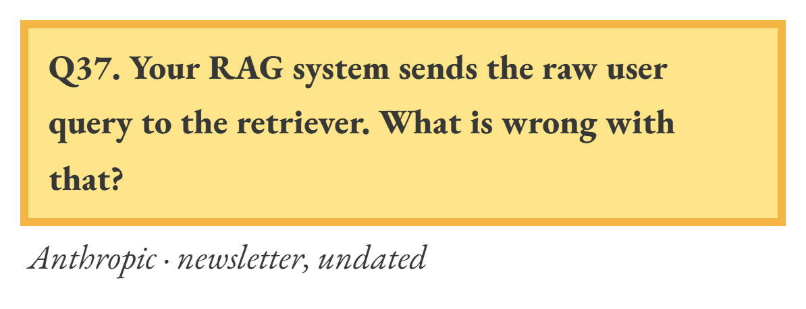

RAW QUERY
seedha retriever ko?
seedha retriever ko?


galat kya hai?
ek chat
MacBook Air ka battery backup?
aur uska price?
↓
RETRIEVER
"aur uska price?"
uska = kiska???
illustration
bhaasha alag
USER
paisa kab vaapas aaega?
DOCUMENT
refund processing time
words match nahi
sahi chunk: rank 9
illustration
FIX: rewrite pehle
chat history
+ query
+ query
→
REWRITE
chhota LLM
MacBook Air ka price kya hai?
rewrite
retrieve
read
rewrite galat ho to?
rewrite ko log karo
original query
rewritten query
↓
results milao
INTERVIEW ANSWER
raw query: context nahi, bhaasha alag
retrieval se pehle standalone rewrite
rewrite ko log karo
rewrite: har message?
ya sirf follow-up?
Comment karo